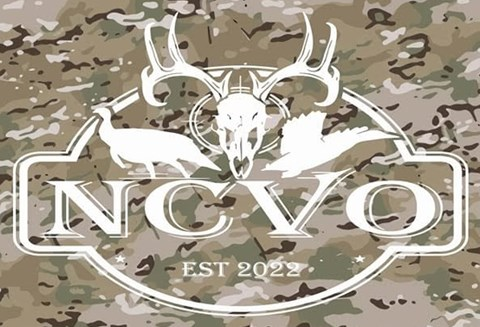

Every veteran is welcome
Every branch, every era. If you served, there’s a place for you here.
Veterans in North Carolina who believe no veteran should feel alone.
North Carolina Veterans Outdoors is a non-profit with a goal to help those that need to know they matter, and they are heard. We lose 22 veterans a day to suicide, this number is something that NCVO wants to help lower.
This organization truly believes that bringing together veterans, allowing them to talk and have a great experience at the same time will help lower this number. NCVO welcomes all veterans to our group, and we hope to have a wide reach in the state of North Carolina.
About the number: “22 a day” comes from the VA’s 2012 suicide data. The VA’s most recent report puts it at about 17.5 a day for 2023. Every one of them is too many.

As a Facebook group for North Carolina veterans who wanted to get outside together.
Our outings are hunting and fishing trips — time in the woods and on the water with other veterans.
Veterans, and the people who stand with them, from across the state.
North Carolina Veterans Outdoors Inc. was recognized by the IRS in 2025. EIN 87-4804200.
Rooted in eastern North Carolina, with a goal of reaching veterans statewide.
Every branch, every era. If you served, there’s a place for you here.
Sometimes the most important thing is being around people who understand — and knowing someone is listening.
No hate speech, no bullying, no spam, and respect for every member’s privacy. That goes for the group and for every outing.
What we are not. We’re veterans helping veterans — a community, not a clinic or a crisis service. If you or someone you know needs help right now, the Veterans Crisis Line is staffed 24/7: dial 988, then press 1, or see all the ways to get help.